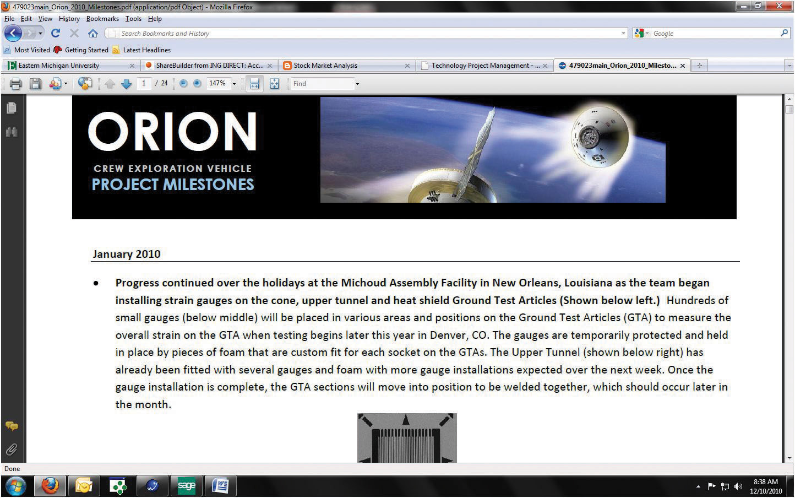

Managing relationships with clients is a challenging task, and it is often discussed online. In this exercise, you locate online articles and other publications dealing with client relationships and then compare and analyze them.
Review your work and use the following rubric to determine its adequacy:
| Element | Best | Adequate | Poor |
|---|---|---|---|
| File name | Ch04ClientStudentName.doc | Word 2010 version using .docx | Another file name |
| Locate and analyze information online related to managing client relationships | Summary of the five points; web address; screen capture; comparison of each point | Same as Best | Summary not accurate; missing web address or screen; all five topics not addressed |
Morale and psyche are an important component in any project; this includes both the team and the client. Project milestones represent significant events within the project. Some project milestones signify external events that provide critical information or resources to the project or an external event that requires information or deliverables from the project. Nonetheless, the proper creation and distribution of this information can be an integral part of the overall success of your project.
Start a web browser program and go to the Orion Crew Exploration Vehicle Project Milestones page for NASA at http://www.nasa.gov/pdf/479023main_Orion_2010_Milestones.pdf. A screen capture of this milestone analysis is shown in Figure 4.9 "Orion Milestone—NASA".
Figure 4.9 Orion Milestone—NASA
Source: nasa.gov.
Review your work and use the following rubric to determine its adequacy:
| Element | Best | Adequate | Poor |
|---|---|---|---|
| File name | Ch04MilestonesStudentName.doc | Ch04MilestonesStudentName | Another file name |
| Locate, download, and analyze a project milestone analysis and then create your hypothetical project milestone analysis for your team and client | Milestone and name/date on first line; screen captures that show the web link in the Milestone folder of your browser’s favorites and an image of the initial screen capture of the NASA milestone analysis; your perceived, most important aspect and rebuttal (250 words); a hypothetical 1,000-word milestone analysis that is entirely consistent | Milestone and name on first line; screen captures that show the web link in the Milestone folder of your browser’s favorites and an image of the NASA milestone analysis; a brief rebuttal (150 words or less) as to why you think this is the most important aspect of the milestone; a hypothetical 500-word milestone analysis that is somewhat consistent | Missing or incomplete screen captures; a rebuttal that is too general and lacks significant educational correlation from the text; a hypothetical milestone analysis that is not consistent and lacks evidence of thought provocation |